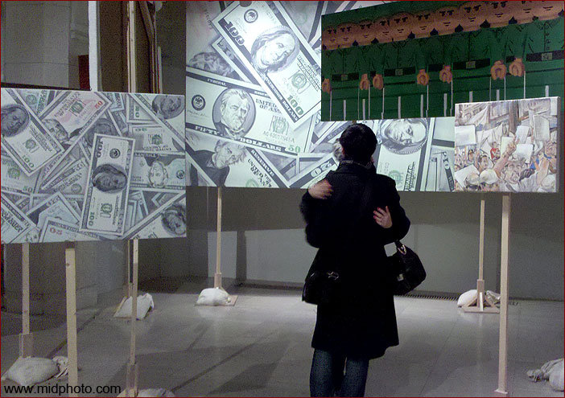
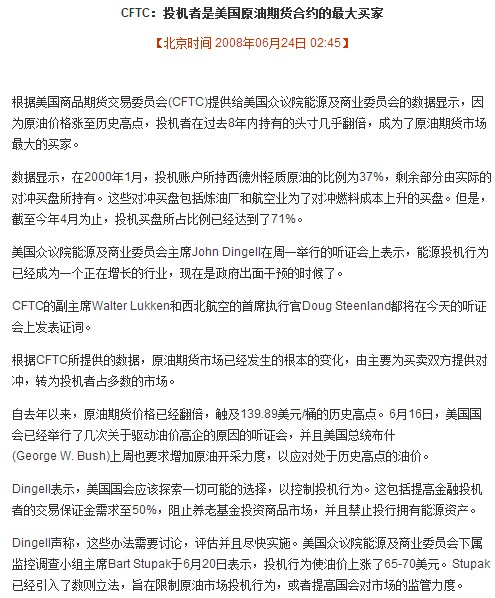

老杨讲义系列（1）
金融学通俗讲义（一）
by 长沙杨飞
本书说明：2013年第一学期，我在湖南大学给高年级本科生开设了一门选修课，名为《金融市场与外汇管理》。我比较认真地写了讲义，约十二万字，近似一部书稿。我尽量以简明易懂的文字来写，因为很多选修的同学并不是相关专业的。我的写作意图是：任何识字的人看完本书后都能成为半个金融专家。现把讲义稍加修改分八个部分发出来。暂改名为《金融学通俗讲义》。此乃初稿，请大家踊跃扔砖，以便再改。
金融市场与外汇管理
课程讲义
杨飞，湖南大学2013
金就是钱。融就是通。金融就是钱（及其衍生品）的流通。广义来说，本课程讨论一切和钱有关的东西。
本课程为专业选修课。平时成绩占40%。开卷考试，皆大欢喜。
本课程分为三大板块
一，金融市场基础知识
二，金融危机的历史、现在与未来
三，财经时政阅读与讨论
新加坡金融区夜晚印象。笔者2005年摄。
开场白（Opening Story ）:老杨侃金融
一， 金融市场基础知识
综述：定义（金融）市场
1， 货币基本知识
A， 货币的历史
a, 羽毛？贝壳？石斧？香烟？
b, 为什么选择贵金属？
c, 为什么放弃贵金属？（货币制度回顾）
d，信用时代的货币再创造（金匠、欠条、准备金与量化宽松）
B， 现在的货币
综述：信用经济 –发行多少货币合适？
a, 人民币 – 某个最大的流氓？
b, 美元 – 一种特殊货币
c, 欧元 – 另一种特殊货币
d, 港币 – 也有点特殊
C， 未来的货币（互联网货币、比特币的讨论）
D， 利息及其计算
a，利息的定义（单利和复利）
b, 为什么会有利息（零利率和负利率可能吗？）
c, 为什么古兰经要禁止利息？这个禁止真的有效吗？
d, 利率到底是由什么决定的？
e, 货币的时间价值（现值和终值）
f, 名义利率和实际利率等各种利率简介
g, 利率与汇率的关系
h, 利率作为金融衍生产品
2，货币市场概况
A，货币市场的定义
B，货币市场五要素分析（含基金）
3，资本市场概况
A，资本市场的定义
B，资本市场五要素分析
C，资本市场货物分析之一：债券
D，资本市场货物分析之二：股票
E，资本市场货物分析之三：期货
F，其他资本市场产品：黄金与房地产市场，保险市场
4，外汇和外汇市场
A, 外汇的概念及其理论
B, 国际收支平衡表
C, 外汇交易简评（含保证金交易）
D, 外汇储备可以分给大家吗？
5, 外汇的消失以及全球统一货币
6, 个人投资简述
二， 金融危机的历史、现在与未来
综述：郁金香、君子兰、CDS
1，1929年危机
2，1997年危机
3，2007年危机
4，欧元的破灭？
5，危机有可能避免吗？
三， 财经时政阅读与讨论
1， 百年老狼 – 经济危机史
2， 国家外汇管理局答群众问
3， 纪录片：时代精神
4， 待处决的吴英
5， 核武器和金融衍生品管制？

美元与情侣。笔者2011年摄于上海当代艺术双年展
开场白 opening story
融通资金，助您成长，金融市场帮助实体经济发展。但我们纵观金融市场却发现：1929年以来，世界主要经济危机都起源于金融业。本该帮助实体经济成长的金融业，为啥会变成祸害世界经济发展的罪魁祸首？我认为目前的金融业已经发展过度了，快速钱生钱变成了交易者的唯一目标。过度金融危害实体经济，降低了每个人的生活质量。以原油期货为例，美国国际商品期货交易委员会CFTC证实80%以上的交易为投机交易，这直接推高了原油价格。以高盛为代表的投行也直接操纵了粮食价格的飙升。
股市和期货市场的短期走势是不可预测的，绝大多数金融工具的价格走势都不可预测，如果可以预测，这个市场就被人操纵了。在一个不可预测的市场想短时间发财，这和赌博无异。
金融工程 =
快速来钱。这个世界经济发展速度很慢，平均每年不到3%，要快速来钱只有两条路可走：1，从别人口袋里搞；2，透支未来的钱。用一堆表面评级很高但实际内涵垃圾的金融产品，高价卖给别人，此种行为等同诈骗，空头CDS和CDO等普通人看得头晕眼花的高级金融衍生工具，其本质莫非如此。未来代表着不可预测性，有风险。透支未来，自己发财，风险转移给政府和社会，等同犯罪。这种犯罪行为必须立法严惩。
去年我认识了湖南大学一位金融女博士生，我问她毕业后想走学术道路不？她摇头说不想再混学校了。看来此女确实出污泥而不染，学术界有时是比酱缸还黑。那你想去哪呢？我又问道。美女想了想：我要去投资银行界。我提醒道：“没听说这两年华尔街五大投资银行全军覆没了？”
华尔街五大投资银行全军覆没，这有点夸张。实际破产清盘的只有一家，也就是老四雷曼兄弟公司（2008年9月），老五贝尔斯登是在破产边缘被摩根大通低价收购（2008年4月，白菜收购价每股2美元），老三美林证券是被美国银行收编（2009年1月），全球投资银行的老二摩根大通和老大高盛公司并没有被收购，
they are too big to
fail，这俩一旦破产，会害死很多人。它们俩2008年9月在美联储支持下转为银行控股公司，结束了独立的投资银行身份，回归混合经营的模式，也就是说，他们现在也和商业银行一样可以直接吸收客户的存款了；这意味着，一旦出事（面临破产），美联储可以直接出资来救（美联储只有义务挽救商业银行，没有义务挽救投资银行）。
五大投行的最后命运说明从1970s到2008风光了三十年的西方投资银行经营模式已经破产，此路不通。
这三十年，是金融创新（金融工程）狂飙猛进的三十年，股票指数期货、利率互换、房地产抵押债券等新产品层出不穷，总成交量2010年已超600万亿美元，高出全球GDP十倍以上。产品复杂到普通人根本看不懂，产品的设计者本人也被搞晕，被自己设计的产品搞死（雷曼兄弟公司死于自己发明的CDO和CDS）。华尔街有句名言：如果你知道自己在卖什么，你每年只能赚十万美元；如果你已经不知道自己在卖什么了，你每年就可赚千万美元。也就是说，他们借助一些常人难以理解的新型金融产品，取得了惊人的收益。
金融工程financial
engineering是2008年之前最热门的财经词汇之一，也是投资银行家笑傲江湖，让无数人羡慕的独门来钱武功。独门武功最后是怎么变成害人兼害己的？话还得从钱说起。各种金融工程产品，说到底都是如何用钱生钱。2008年之前，投资银行家们的赚钱速度之快让人目瞪口呆。
资产管理界有一条圣经：风险和收益永远成正比。换句话说，收益越大，风险也越大。华尔街的银行家们，别看他们赚得盆满钵满，实际上他们也是冒着很大的风险的。所有让人眼花缭乱的高级金融衍生产品，如外汇保证金交易、指数期货、CDS等，其本质无非是利用金融杠杆放大交易规模，用一块钱来赌十块甚至五十块钱的盘，赌中了当然赚大钱，一旦失手则立马破产。如果有人告诉你某种投资收益巨大而风险甚小，此人十有八九是骗子。这里我并没有说投资银行家们都是骗子（麦道夫庞氏骗局除外），我只是说他们很好地安排了风险和收益，也就是说，收益自己担当，风险留给别人。
投资银行和证券公司破产清盘，操盘手和高管依然发财，风险转移给了投资者和政府。美国政府以“量化宽松”政策来救助他们，实际等于直接开动印钞机，美元随之贬值，倒霉的是所有持有美元的人，这等于是有人从大家口袋里偷钱来肥自己，直接往酒里兑水啊。2008年10月6日，雷曼兄弟公司总裁福尔德在国会听证会上不肯认错，说市场谣言和监管不力造成了公司垮台。众议院监督和政府改革委员会主席亨利•维克斯曼勃然大怒：“你拿别人的钱去冒险，为自己挣了那么多钱，制度对你有利，那其他国民呢？其他纳税人呢？现在他们要拿出7000亿来拯救我们的经济。”众议员特纳更加直接，指责这种行为“形同偷窃”。
现在政府的做法是直接出资来挽救破产的大投机者，挽救全球最大保险公司AIA，挽救华尔街投资银行和房地产信贷公司，这造成严重的道德风险：我可以尽情追逐高风险高收益的资产，一旦破产，自然有人来救我。政府拯救投机商的钱不是天上掉下来的，是通过发行钞票和债券以及税收的来的钱。这种情况持续下去，就等于全球老百姓来为极少数大投机商买单。试问你愿意吗？
把账都算到银行家头上也许有点冤。金融市场，特别是高级衍生品市场，其性质实际上类似赌场。2010年全球GDP大约是60万亿美元，2010年金融衍生品交易总额超过600万亿美元，也就是说，90%的金融市场交易纯属投资（投机），和实际生产生活没有任何关系。这就如同一个人不去干活，天天泡在赌场里梦想发财一样。
为什么说现在的股票市场和期货市场是赌场？
市场的初衷是便于交换物品。但完全信息和完全公平的市场是不存在的。只要有交换就会有价格波动，有波动就会有人从里面赢利。因为财产私有制，人具有天生的逐利性。于是每个市场都会有一些人倒买倒卖，利用市场的不完美性来赚钱。
市场上有两种人：投资者和投机者。投资者一般属于生产以及需要实际产品的人。投机者并不需要任何实际产品，他们在市场里买进卖出的唯一目的是赚钱。
任何市场都会有投机者。少量的投机者是有利于市场发展的。本人的观点：假如一个市场上50%的交易者是投机商，那这个市场就不健康了；假如70%以上的交易者都是投机商，这个市场就快疯狂了。这种市场会扭曲商品的实际价值，坑害所有的最终消费者，唯一获利的是投机商。你可以在大街上随便抓10个买股票的人，问问他们买股票是为了快速赚差价还是为了长期持有等待分红。请大家回去问问买股票的亲朋好友。房地产市场也是一样，大家可以调查一下目前商品房的空置率。
我之所以说股市和期货市场是赌场，乃是因为理论上来说，一个理想的市场，其价格走势应该是不可预测的，涨跌机会参半，如同丢硬币。理论上来说，如果你的猜测准确率超过50%哪怕一点点（比如你猜股市隔日的涨跌，准确率为51%），那只要你的交易量足够大，你也会发财。
市场从本质上来说并不创造财富，股市也是一样。我们不停地买进卖出就会增进大家的福利？这当然是无稽之谈，我们都知道股市的成交量是不计入GDP的。本质上来说市场都是零和游戏（zero
sum
game），有人赚就有人亏，总盈亏平衡为零。当然，股市和其他市场不太一样，从长期来看它不是零和游戏，随着经济的发展，股市的总价值也会上升，但这个上升的速度是很慢的，如果市场是完美的，它的总价值应该等同于经济发展的。这个速度是多少呢？我们知道，全球GDP的年增长率大约是3%。
下面看看期货市场的情况。请看此图：

当赌场生意欣欣向荣的时候，气球越吹越大，每个人都在赚钱。一旦气球炸了，大家都去指责别人。但是，理论上来说，所有人都是金融市场的参与者，中产以上者就更不用说了。每个人，每个家庭，每一个公司，都在为这个赌场添砖加瓦。
至于为数众多的证券公司投资银行，它们只能算是赌场伙计和掮客。在这个大赌场里，真正的庄家和老板是中央银行和政府。他们发行赌场执照，制定赌场规则。奇怪的是，他们居然也是赌场的参与者，还往往是最大的玩家。要说出老千，还有比这更离奇的吗？
（待续）
很抱歉《通俗金融学讲义》这书稿拖了好几年。我的烂尾楼太多，待我慢慢来。。。
关注老杨作品：
1，杨飞摄影
www.midphoto.com
2，微信：yangfei789288
3，微信公众号：长沙杨飞
4，新浪微博@长沙杨飞
5，推特Twitter@feiyang17
6，Facebook：yangfei999999@hotmail.com